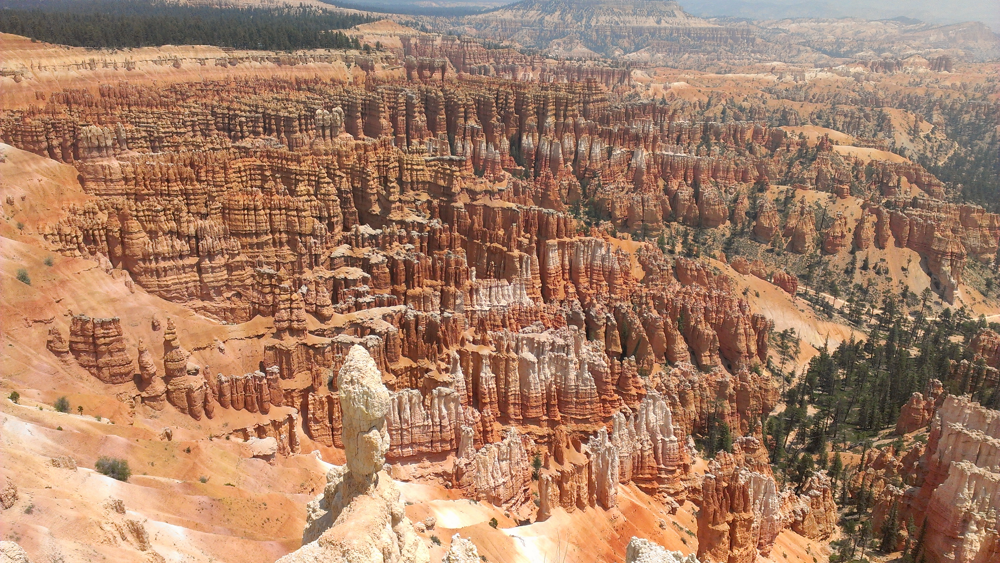

Grand Canyon

The trip started with a flight to Phoenix, Arizona and a shuttle
up to Flagstaff. Met up with the rest of my family and then on to the
South Rim of the Grand Canyon. We stayed in one of the Park's lodges
and did several hikes both along and down into the canyon.
Page, AZ

Next stop was Page, Arizona. Home to Horseshoe Bend, Antelope Canyon,
and the starting point for a raft trip down the Colorado River. Antelope
Canyon is one of the more famous slot canyons that you've probably seen
in photographs.


Mesa Verde National Park

We dipped into Colorado for our third stop, Mesa Verde National Park
which featured cliff dwellings over 700 years old. The above image shows
one of these dwellings known as Cliff Palace. We did a Park Ranger led
tour first thing in the morning, which is why there are no other tourists
in that photo!
Arches National Park
Arches National Park was our first stop in the state of Utah near
Moab. The appropriately named park features numerous naturally occuring
stone arch formations.
Bryce Canyon National Park

We stayed in the state of Utah for our next stop. Without a doubt,
the most alien-looking of the parks we visited, Bryce was 20 degrees cooler
than all the other stops on our trip. The signature feature of the park
are the strange looking "hoodoos" shown in the above image.
Zion National Park
Our last stop before heading home was Zion National Park. Of all the Parks
we visited, Zion was the most majestic. Grand Canyon was massive to be sure, but
Zion had towering cliffs of its own and you just had the sense of being small
as you craned your neck staring up the faces of the cliff walls. My
favorite hike of the trip was here in Zion. Known as the Narrows, it was a trek
through the Virgin River flanked by high-as-you-can-see sheer cliff faces.